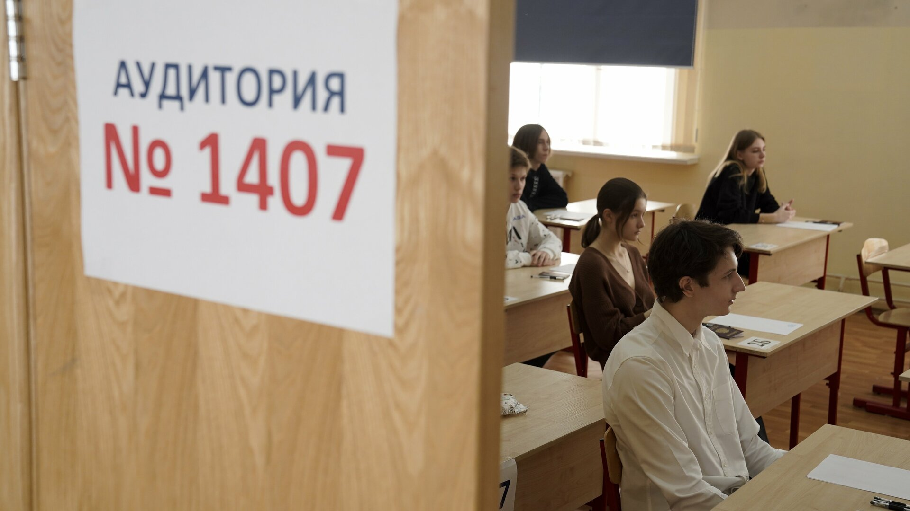

Об экзамене
ЕГЭ по русскому языку, как и по всем остальным предметам — это не простой и волнительный экзамен. На поступление в ВУЗ он влияет также сильно как профильные предметы. Не все, кто его пишет, получают желаемый балл. Вот статистика за 2024 год: средний балл ЕГЭ по русскому языку составил 63,88. На 100 баллов экзамен написали 2636 участников из более чем 665 тысяч (~0,4%).
Подробнее о проведении экзамена
При должной подготовке этот экзамен не будет сложным. Нужно внимательно изучить демонстрационный вариант теста, спецификацию и кодификатор, определить, какие задания вызывают трудности, и начать подготовку, учитывая это. В этом проекте собрано много полезной информации, а конкретно: правила, схемы решения заданий, шаблоны сочинения, примеры сочинений, критеррии оценивания и 10 вариантов для практики. Со всем этим можно ознакомиться ниже.
Теория
| Грамматика |
| Правила орфографии, слова, частей речи, синтаксиса и пунктуации |
| ➟ |
Без знания грамматических правил сдать ЕГЭ невозможно. В первой части экзамена есть тестовые задания, которые проверяют знание орфографии, лексики, грамматики, пунктуационных норм и навыков комплексного анализа текста. Например, в заданиях 7 и 8 нужно найти и исправить грамматические ошибки, а также определить, какие именно ошибки допущены в предложениях. Знание правил русского языка важно в сочинении, так как максимально оно оценивается в 21 балл, из них грамматика и речевые нормы оцениваются по 3 балла каждое.
В разделе "Грамматика" собраны правила в виде схем, удобных для запоминания. Чтобы знания были систематизированными, правила упорядочены по разделам.
| Тестовая часть |
| Схема решения для каждого из заданий первой части (1-26) |
| ➟ |
Первая часть ЕГЭ по русскому языку включает в себя 26 заданий с кратким ответом. Некоторые разделы, которые охватываются заданиями первой части:
| Сочинение |
| задание 27 – план и особенности написания сочинения в формате ЕГЭ |
| ➟ |
В ЕГЭ по русскому языку сочинение является 27 заданием. По условию требуется написать сочинение-рассуждение по предложенной проблеме (в этом году проблема будет сформулирована в задании). В комментарии нужно привести два примера-иллюстрации и пояснить их. Разумеется, между ними должна прослеживаться смысловая связь, проанализированная учеником. Далее формулируется собственное отношение к позиции автора, используется аргументация, источником для которой служит жизненный, читательский или историко-культурный опыт. И только потом завершает текст выводом по всей работе. Объём сочинения — не менее 150 слов.